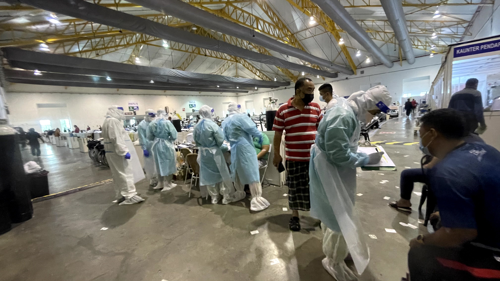
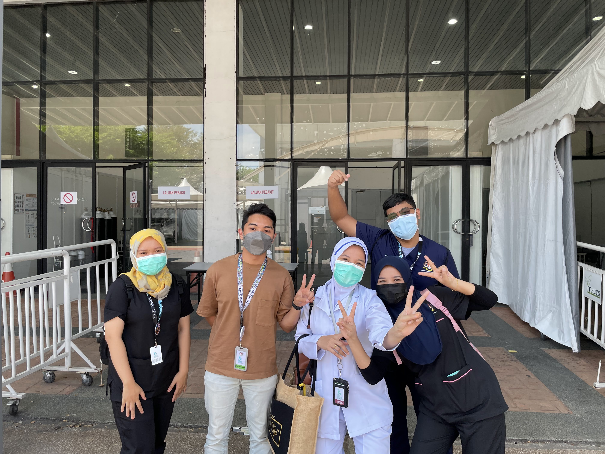

Volunteering at PKRC MAEPS 2.0
I started volunteering at MAEPS2.0 from 3 September 2021 until 18 October 2021; my hall is located at hall A3, and my job scope is to assist MA and doctors
in helping the patient in quarantine areas caused by COVID-19. Because of that time, Malaysia hit the 20k cases per day, and the government called it a “pandemic”.
An unforgettable experience in the medical sector was when I was confronted with the various behaviours of patients in quarantine centres.
I am grateful to be able to contribute energy to helping the government curb this epidemic from spreading more widely.
Helpdesk My Sejahtera PWTC
Mysejahtera kiosk was established in early 2022, and this is because there were many complaints in terms of the loss of vaccination certificates,
being in the wrong dependents, and there were technical problems with the mysejahtera application. With the Malaysian Ministry of Health initiative to solve the
problems
faced by mysejahtera users, the MySejahtera physical helpdesk is open at the WTCKL. It will operate daily until March 15, by New Strait Time in February 2022.
MYVAC
MyVAC (Malaysia Vaccine Support Volunteers) was established by the Ministry of Health (MOH),
MOSTI, Ministry of Youth & Sports (KBS),
Ministry of Higher Education (MOHE),
and the MRCS to assist in the launch of the government immunisation programme.
This volunteer mobilisation initiative will help Malaysia acquire "Herd Immunity."